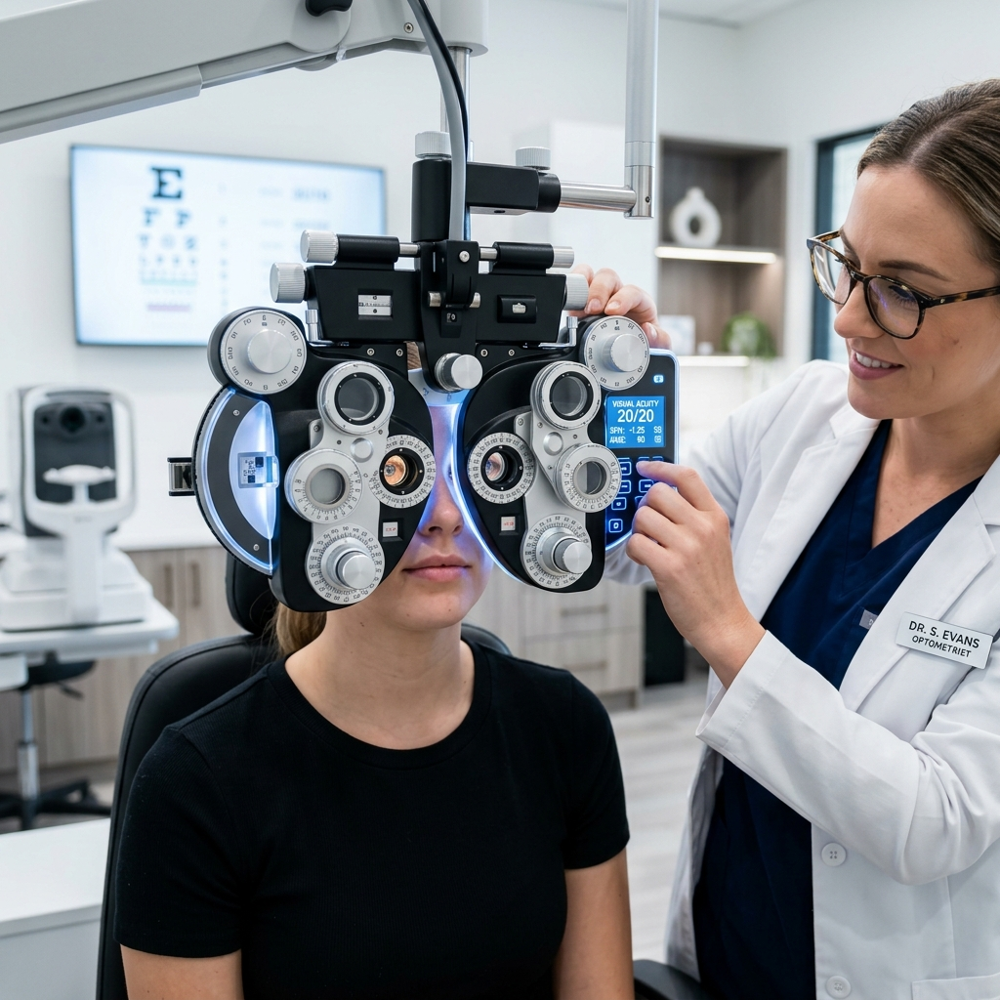

Nuestros Servicios Ópticos
En Tu Óptica Familiar, nos enfocamos tanto en obtener la receta exacta para tus lunas como en monitorizar la salud integral de tu sistema visual.
Medida de la Vista Computarizada
Utilizamos un Autorefractómetro Queratómetro digital de alta precisión. Este instrumento mide objetivamente la curvatura de la córnea y calcula de forma automática la refracción del ojo.
Posteriormente, nuestro especialista realiza pruebas de agudeza visual subjetivas para calibrar la comodidad del paciente, asegurando una receta de lentes perfecta y adaptada a su estilo de vida y trabajo.
Reservar Cita
Evaluaciones Clínicas Especializadas
La salud visual va mucho más allá de leer letras en una cartilla. Cuidamos cada aspecto de tus ojos.
Motilidad Ocular y Estrabismo
Evaluamos los movimientos coordinados de ambos ojos. Esto permite descartar y tratar el estrabismo (desviación ocular) y forias latentes (tensión muscular), causantes frecuentes de visión doble, dolores de cabeza frecuentes y fatiga en lecturas prolongadas.
Agendar DescarteDescarte de Ambliopía (Ojo Vago)
La ambliopía es la falta de desarrollo del canal visual en un ojo, común en niños. Realizamos despistajes a temprana edad para corregir a tiempo este problema, previniendo dificultades futuras en el aprendizaje, concentración y rendimiento escolar.
Agendar DescarteDescarte de Pterigión (Carnosidad)
Evaluamos la superficie ocular para descartar el crecimiento anormal de tejido sobre la córnea (pterigión), estimulado por el polvo, sequedad y radiación solar. Brindamos pautas de cuidado, tratamiento preventivo y remisión en caso de requerir cirugía.
Agendar DescarteContactología Especializada
Ofrecemos el servicio de adaptación personalizada para lentes de contacto. Te ayudamos a seleccionar entre lentes de contacto blandos, esféricos, tóricos (para astigmatismo) o cosméticos, garantizando comodidad, higiene y una oxigenación corneal óptima.
Solicitar Adaptación